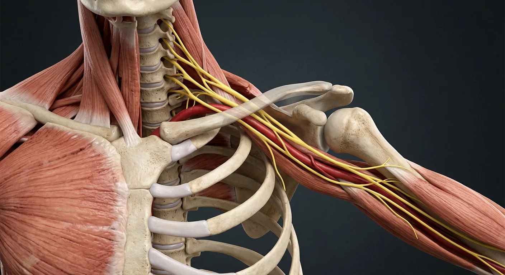

How this part of the body works
The brachial plexus usually arises from ventral rami C5–T1. C5–6 form upper trunk, C7 middle trunk and C8–T1 lower trunk. Each trunk divides anteriorly and posteriorly; anterior divisions of upper/middle form lateral cord, lower forms medial cord, all posterior divisions form posterior cord. Cords are named relative to the axillary artery. Musculocutaneous, axillary, radial, median and ulnar nerves reach the limb; several important scapular and pectoral branches leave the plexus before these endpoints.
Read the anatomy, part by part
These 18 structures correspond to the chapter’s regional illustration or schematic. Each entry separates location, function and a clinical point.
C5–T1 ventral rami
Five spinal nerve ventral rami build the typical plexus; not the intrathecal dorsal/ventral rootlets.
What it doesProvide segmental motor and sensory fibers to upper limb.
Clinical connectionAnatomy can be prefixed C4–C8 or postfixed C6–T2.
Interscalene passage
Roots and trunks pass between anterior and middle scalene muscles.
What it doesConveys plexus out of neck.
Clinical connectionSite of interscalene regional anesthesia.
Upper trunk
Formed by union of C5 and C6 ventral rami.
What it doesRedistributes upper-root fibers into divisions.
Clinical connectionUpper-trunk traction can weaken shoulder abduction and elbow flexion.
Middle trunk
Continuation of C7 ventral ramus.
What it doesFeeds anterior and posterior divisions.
Clinical connectionC7 contribution enters multiple terminal nerves.
Lower trunk
Formed by C8 and T1 ventral rami.
What it doesCarries lower-root fibers toward hand pathways.
Clinical connectionLower-trunk damage may weaken intrinsic hand muscles.
Anterior divisions
One anterior division from each trunk, usually destined for limb flexor compartments.
What it doesCreate lateral and medial cords.
Clinical connectionDivisions lie posterior to clavicle.
Posterior divisions
One posterior division from each trunk converges on posterior cord.
What it doesFeed extensor-compartment pathways.
Clinical connectionDifferentiate divisions from posterior spinal nerve rami.
Lateral cord
Upper and middle trunk anterior divisions join lateral to axillary artery.
What it doesGives musculocutaneous and lateral root of median nerve.
Clinical connectionNamed relative to axillary artery.
Medial cord
Continuation of lower trunk anterior division, medial to axillary artery.
What it doesGives ulnar and medial root of median nerve.
Clinical connectionMedial cutaneous nerves of arm/forearm also arise here.
Posterior cord
All three posterior divisions unite posterior to axillary artery.
What it doesGives axillary and radial nerves.
Clinical connectionVulnerable in axillary trauma.
Musculocutaneous nerve
Lateral-cord branch through coracobrachialis to arm flexors.
What it doesElbow flexion and lateral forearm sensation.
Clinical connectionInjury weakens biceps/brachialis and lateral forearm sensation.
Median nerve
Receives lateral and medial cord roots in axilla; travels through forearm to hand.
What it doesMost forearm flexors, thenar muscles, lateral palmar digits.
Clinical connectionCompression at carpal tunnel affects median sensory territory.
Ulnar nerve
Medial-cord continuation descends behind medial humeral epicondyle.
What it doesMost intrinsic hand muscles and medial hand sensation.
Clinical connectionVulnerable at elbow/cubital tunnel.
Axillary nerve
Posterior-cord branch through quadrangular space around surgical neck of humerus.
What it doesDeltoid, teres minor and lateral shoulder skin.
Clinical connectionShoulder dislocation can injure it.
Radial nerve
Large posterior-cord branch courses through radial groove and forearm.
What it doesExtensors of elbow, wrist and fingers; posterior limb sensation.
Clinical connectionRadial groove injury may cause wrist drop.
Long thoracic nerve
C5–C7 root-level branch descending along serratus anterior.
What it doesHolds scapula against chest wall.
Clinical connectionDamage can cause medial scapular winging.
Suprascapular nerve
Upper-trunk branch to supraspinatus and infraspinatus.
What it doesStarts shoulder abduction and external rotation.
Clinical connectionCan be trapped near suprascapular notch.
Axillary artery
Artery in axilla around which plexus cords are named.
What it doesProvides spatial reference, not a neural component.
Clinical connectionCord labels are meaningless without artery orientation.
Deeper structures and tissue layers
These 2 additional entries give anatomical context. They are deliberately not assigned a photographic pin on the regional image.
Dorsal scapular nerve
Root-level C5 branch traveling toward rhomboids and levator scapulae.
What it doesRetracts/elevates scapula with its target muscles.
Clinical connectionInjury may alter scapular stability.
Medial pectoral nerve
Branch from medial cord entering pectoralis minor and major.
What it doesContributes to pectoral muscle activation.
Clinical connectionNot a cutaneous sensory nerve of medial chest.
Five questions about Brachial plexus · arm nerves
Short answers grounded in the structures described above. Use the illustrated guide for anatomical context.
Which spinal nerves form the brachial plexus?
Its main roots usually arise from ventral rami C5 through T1. They organize into trunks, divisions, cords and terminal branches.
What are the five major terminal branches of the brachial plexus?
Musculocutaneous, axillary, radial, median and ulnar nerves are the five commonly taught terminal branches.
What is the C5–T1 ventral rami?
Five spinal nerve ventral rami build the typical plexus; not the intrathecal dorsal/ventral rootlets. Function: Provide segmental motor and sensory fibers to upper limb.
Where is the upper trunk located?
Formed by union of C5 and C6 ventral rami. Function: Redistributes upper-root fibers into divisions.
What is the function of the lower trunk?
Function: Carries lower-root fibers toward hand pathways. Formed by C8 and T1 ventral rami.
Related anatomy guides
Follow these connected structures and body systems in the illustrated atlas.
 Nervous system — overviewOne continuous network: the brain and spinal cord compute, and 43 pairs of peripheral nerves carry orders out and reports back.↗
Nervous system — overviewOne continuous network: the brain and spinal cord compute, and 43 pairs of peripheral nerves carry orders out and reports back.↗ Spinal cordCross-section: a grey butterfly inside white tracts, wrapped in three meninges.↗
Spinal cordCross-section: a grey butterfly inside white tracts, wrapped in three meninges.↗ Muscular systemEvery movement, every breath, every heartbeat's preload begins as muscle fibres sliding — here the skeletal set in écorché.↗
Muscular systemEvery movement, every breath, every heartbeat's preload begins as muscle fibres sliding — here the skeletal set in écorché.↗ Shoulder jointMobility bought at the price of stability: a shallow glenoid, a loose capsule, and four rotator-cuff tendons doing the holding.↗
Shoulder jointMobility bought at the price of stability: a shallow glenoid, a loose capsule, and four rotator-cuff tendons doing the holding.↗Further reading
General anatomy references and related source chapters for continued study. These links do not make the digital illustrations clinical images or certify every anatomical variant.
This educational material does not provide medical advice, diagnosis or treatment. A named clinical reviewer has not been claimed for this page.
Open the interactive plate, pins, animated schematic and self-test.